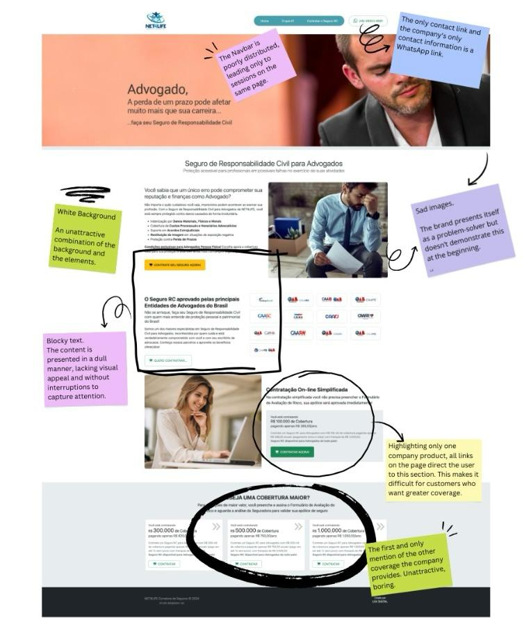

Lawyers Insurance Website UX Case
Project Overview
A legal insurance company serving Brazilian lawyers had a website that buried its products, undermined its own credibility, and failed to communicate its core mission. This project redesigned the full layout — from information architecture to visual identity — to better serve three distinct user profiles and convert visitors into clients.
Role: UX Designer, Frontend Developer
Tools: Figma, HTML5, CSS3, Bootstrap 5
Type: Freelance project — Laerccius Consultoria de Tecnologia LTDA
The Problem
The existing website had a fundamental contradiction: a company selling security and confidence to lawyers was communicating through a confusing, inaccessible, and visually discouraging interface.
Key issues identified:
- Navigation that went nowhere: All navigation bar links led back to the same page, with no About page and a single barely visible WhatsApp contact link — significantly undermining credibility for a financial product.
- Products hidden from users:The company offers four insurance packages — from R$100K to R$1M in coverage — but all links directed users exclusively to the entry-level plan, leaving 75% of the product portfolio invisible.
- Images that contradicted the mission: The site was filled with images of anxious, worried lawyers — attempting to connect with pain points but failing to convey the confidence and success the product is meant to deliver.
- Accessibility gaps: Despite black-and-white contrast, small and densely grouped text created barriers for users with visual impairments. No alternative text existed for screen readers.
- Information overload before value: Users had to read through long, dense text before understanding what the product offered or why they should trust the company.


Research & Insights
Given the freelance context and timeline, this project relied on secondary research — a deliberate methodological choice that would be expanded in future iterations. What was researched: Legal insurance website benchmarks and templates | Lawyer professional profiles on LinkedIn, Instagram, and law firm websites | Visual and communication patterns in the legal sector. Key observations:
- Sober, bold color palettes dominate legal branding : communicating stability, authority, and trustworthiness. Blue and gold in particular are strongly associated with excellence and justice in Brazilian legal culture.
- The audience is not monolithic: Secondary research revealed at least three distinct user profiles among Brazilian lawyers — each with different needs, risk tolerances, and coverage requirements. The existing website addressed only one.
- The simplified plan dominates, but other products have an audience: Younger lawyers gravitate toward the entry-level plan, but mid-career and senior professionals managing firms have significantly higher coverage needs — and those users were being lost.
*Note: Quantitative research, interviews, and usability testing were not conducted for this project. These are included as recommendations for future iterations.
Define
Personas: Three personas — grounded in secondary research
- João, 26 — Recently graduated, building his first client base alone. Worried about missing deadlines as his caseload grows. "I need to feel confident to perform better." → Primary audience for the simplified R$100K plan.
- André, 33 — Seven years practicing, co-owns a small firm specializing in labor law. Recently took on high-profile clients with significant social media exposure. "I need to protect my firm's image." → Audience for mid-range coverage plans.
- Mariela, 48 — Experienced lawyer, owns a legal advisory firm, seeking to expand her team but needs guarantees to attract investors. "I need to create a safe environment to grow." → Audience for R$500K–R$1M coverage plans.
Core insight driving the redesign:
The website was designed for João but needed to speak to André and Mariela too — three users with the same product category but fundamentally different motivations, fears, and decision-making criteria.
Design Decisions
- Color palette - blue and gold Replaced the stark black-and-white with a blue and gold palette, aligning with legal sector conventions while increasing contrast for readability. The palette communicates stability and excellence — exactly what a lawyer buying insurance needs to feel.
- Reframing the imagery - replaced anxious lawyers with images of confident, successful professionals in safe, comfortable environments. The visual language now reflects the company's actual mission: helping lawyers become confident practitioners, not dwelling on their fears.
- Exposing all four products - redesigned the product section to give equal visibility to all coverage tiers — opening a dialogue with André and Mariela, not just João. Each plan now has its own clear entry point.
- Adding About and Contact pages - two pages that should never have been missing from a financial product website. An About page builds trust; a Contact page with email, address, and social media gives users multiple ways to verify legitimacy before committing to a purchase.
- Dual color theme for accessibility - light and dark mode — addressing both permanent visual impairments (low vision, color sensitivity) and temporary conditions (post-sun sensitivity, screen glare). Combined with larger fonts and reduced text density, the redesign significantly lowers reading barriers.
- Footer with social channels - added a structured footer with social media links and company information — standard credibility signals that were completely absent from the original.
The new Layout
The redesign achieved 100% design fidelity in the migration from prototype to production — meaning every decision made in Figma was implemented exactly as designed.


Outcomes
- Full website redesign delivered with 100% design fidelity
- Information architecture restructured to serve three distinct user profiles
- All four insurance products made accessible from the main navigation
- Accessibility improved through dual color theme, larger fonts, and reduced text density
- Company credibility reinforced through About page, expanded contact options, and social proof
Recommendations for Next Iterations
- User interviews - with lawyers across the three persona profiles to validate assumptions and uncover unmet needs
- Usability testing - on the redesigned layout, particularly the product selection flow
- Rethink the purchase flow — the current conversion path from landing page to product purchase was not redesigned in this iteration and represents a significant UX opportunity
- Implement alternative text - across all images for screen reader compatibility
- Direct chat - between users and the team to reduce friction in the pre-purchase decision phase
Takeaways
This project was a lesson in how much damage a misaligned visual language can do. The original website wasn't just hard to use — it was actively contradicting the product's value proposition with every worried face it showed. Good UX isn't just about navigation flows; it's about whether the entire experience communicates the right thing to the right person. Working within the constraints of a freelance project — limited research access, real client requirements, tight timelines — also reinforced something important: methodological honesty matters. Knowing what you didn't research is as important as knowing what you did.
Coded by Le Santana, open-sourced at Github 🤙